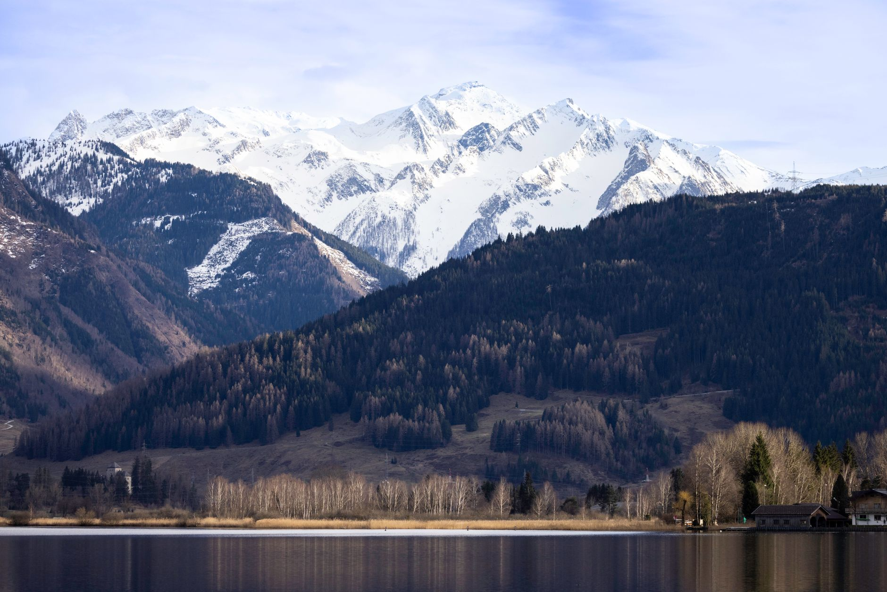
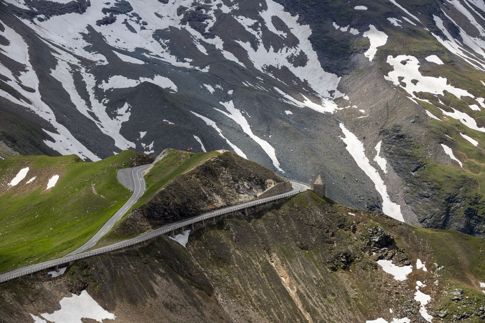
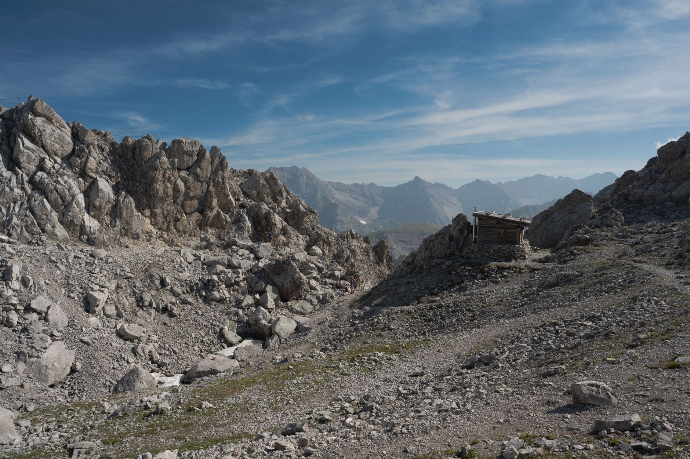
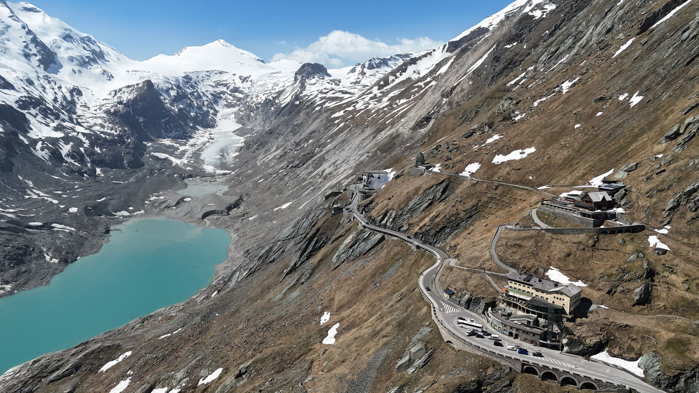
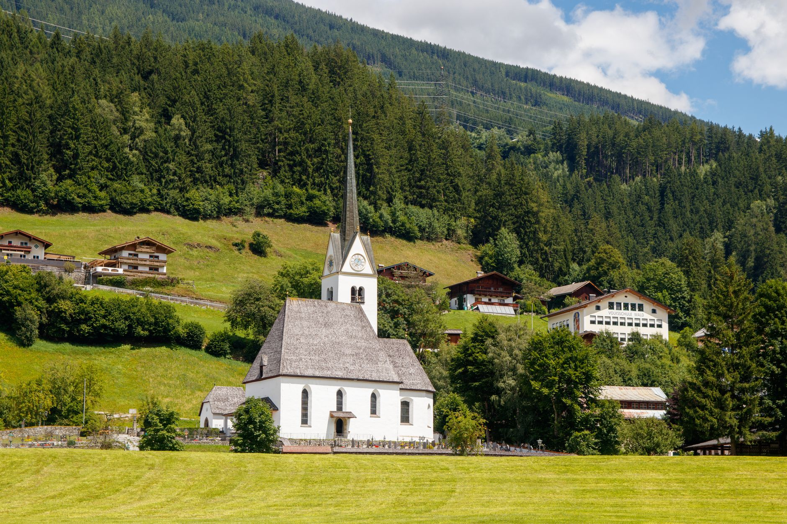

Photo: Marija van Velzen / Pexels
The Grossglockner High Alpine Road is Austria's highest surfaced mountain pass road, climbing from Bruck in Salzburg to Heiligenblut in Carinthia. It wasn't built for tourism first: construction ran from 1930 to 1935, during the Great Depression, as a state jobs program that employed around 3,200 workers when work of any kind was scarce.
It's a toll road, privately operated since it opened, and a full day is the realistic plan if you actually stop at the viewpoints rather than just crossing the pass.
-

Zell am SeeThe usual overnight base, on a glacier-fed lake. -

FuschThe north toll gate, where the climb actually starts. -

Edelweissspitze2,572 m, the highest point a car can reach on this road, with 37 peaks over 3,000 m in view. -

Franz-Josefs-HoheA platform over the Pasterze, Austria's largest glacier, which has been retreating for decades. -

HeiligenblutThe south end, a village stacked beneath Austria's highest peak.
Stop photos: Piet hein Schuijff, Alan Kabeš, Róbert Nyulasi, Zb travel, Freek Wolsink / Pexels
Franz-Josefs-Höhe is worth more time than a drive-by. The Pasterze is Austria's largest glacier, and it's visibly shorter than it was even a decade ago.
Good to know before you drive it
- The road is only open seasonally, typically May through October, weather permitting. It closes fully in winter.
- It's a toll road with a per-vehicle fee, separate from any Austrian motorway vignette. Pay at the gate, not in advance.
- Edelweissspitze is a 1.5 km branch road off the main route, not the main pass itself. It's the highest point reachable by car, with a parking area and mountain hut at the top.
- 88 km end to end, but the road's curves and the viewpoints both slow it down. A relaxed full day, not a quick crossing, is the realistic plan.
Ready to book this drive? This route runs 88 km and about 2.9 hours behind the wheel, entirely inside Auto Europe's coverage area.
We book through Auto Europe. It compares Hertz, Sixt and the other major agencies in one search, with cross-border and one-way terms visible before checkout instead of buried in each company's own fine print.
Compare car rental prices →This is an affiliate link. Booking through it may earn Travel Gap a commission at no extra cost to you.
Read the full Europe road trip planning guide for what to check before you book anywhere on the continent.